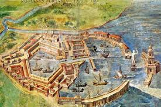
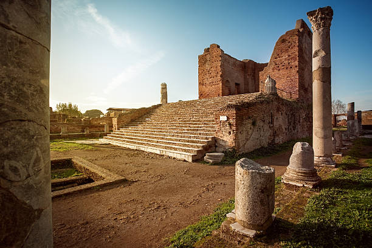

La sua storia
Il porto di Ostia, una metropoli di oltre un milione di abitanti, si trovò a dover gestire un’enorme logistica per l’approvvigionamento di beni essenziali come grano, olio, vino, tessuti e metalli. Tuttavia, il piccolo porto fluviale presso Ostia, alla foce del Tevere, era inadeguato per il traffico marittimo necessario, poiché non poteva ospitare navi di grande pescaggio.
Nel I secolo, Roma, una metropoli di oltre un milione di abitanti, si trovò a dover gestire un’enorme logistica per l’approvvigionamento di beni essenziali come grano, olio, vino, tessuti e metalli. Tuttavia, il piccolo porto fluviale presso Ostia, alla foce del Tevere, era inadeguato per il traffico marittimo necessario, poiché non poteva ospitare navi di grande pescaggio.
Questa limitazione costringeva a effettuare trasbordi rischiosi in mare aperto su imbarcazioni più piccole, con frequenti naufragi. Le merci potevano poi essere trasportate via fiume fino a Roma o sbarcate a Puteoli (Pozzuoli), a 250 km di distanza, per proseguire via terra.
Per risolvere questi problemi, gli imperatori Claudio e Traiano realizzarono un grande porto alla foce del Tevere: il Portus Romae, che divenne il fulcro commerciale e contribuì alla creazione di una vera e propria metropoli portuale.

Lo Sviluppo del porto di Ostia
Ostia, inizialmente una piccola colonia, si trasformò nel porto commerciale di Roma con la costruzione del Porto di Claudio nel 42 d.C. Questo porto, inaugurato sotto Nerone e noto come Portus Augusti Ostiensis, affrontò significativi problemi strutturali, come dimostrato dal naufragio di 200 navi durante una tempesta nel 62 d.C. Per affrontare queste sfide, l'imperatore Traiano ordinò nel 113 d.C. la costruzione di un nuovo bacino esagonale, collegato al porto esistente e al fiume Tevere tramite la Fossa Traianea. Questi interventi non solo migliorarono la funzionalità del porto, ma trasformarono Ostia in un centro portuale strategico e in una città fiorente.
Ulteriori Sviluppi e Importanza
Ostia non era solo un porto, ma anche un importante centro commerciale e culturale. Durante l'età imperiale, la città si dotò di infrastrutture significative, come un teatro, un foro e un acquedotto, che riflettevano il suo status crescente. La sua posizione strategica alla foce del Tevere la rese cruciale per il commercio marittimo, facilitando il flusso di merci verso Roma e oltre. Con il declino dell'Impero Romano, Ostia subì un rapido deterioramento, ma le sue rovine rimangono un'importante testimonianza della vita urbana e commerciale dell'antichità.Ostia, inizialmente una piccola colonia, si trasformò nel porto commerciale di Roma con la costruzione del Porto di Claudio nel 42 d.C. Questo porto, inaugurato sotto Nerone e noto come Portus Augusti Ostiensis, affrontò significativi problemi strutturali, come dimostrato dal naufragio di 200 navi durante una tempesta nel 62 d.C. Per affrontare queste sfide, l'imperatore Traiano ordinò nel 113 d.C. la costruzione di un nuovo bacino esagonale, collegato al porto esistente e al fiume Tevere tramite la Fossa Traianea. Questi interventi non solo migliorarono la funzionalità del porto, ma trasformarono Ostia in un centro portuale strategico e in una città fiorente.
